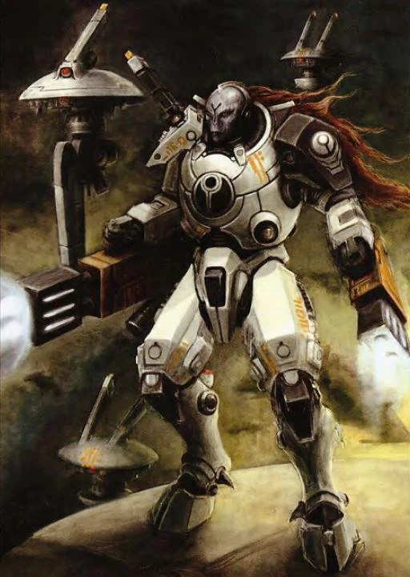

Commander Shadowsun
| Commander Shadowsun | |
|---|---|
| Shas'O of the Fire caste, Supreme Commander of the Third Sphere | |
 Shadowsun in her XV22 Stealth battle-suit, from an Ordo Xenos dossier Artwork © Games Workshop | |
| Commander of the Third Sphere Expansion | |
| Tenure | 997.M41 – present |
| Appointed by | Aun'Va |
| Rival | Commander Farsight |
| Born | c. 700.M41 (estimated), T'au[a] |
| Status | Active |
| Allegiance | T'au Empire |
| Other titles | Shas'O Shaserra; Heroine of the Third Sphere; True Disciple of Commander Puretide |
| Wargear | XV22 Stealth battle-suit; fusion blasters; MV52 shield drones |
| Known for | The Third Sphere Expansion; the Taros Campaign and the Agrellan campaigns |
Commander Shadowsun, known to the T'au as Shas'O Shaserra and in the empire's propaganda as the Spearhead of the Greater Good, is the Fire Caste commander who leads the T'au Empire's Third Sphere Expansion. She is a former student of the legendary Commander Puretide and was the greatest rival of Commander Farsight in the final years of that teacher. Imperial scholars consider her the most dangerous T'au commander now living, for she combines patience with a readiness to strike at the enemy's command.[1]
She took command in 997.M41, when the Ethereal Supreme Aun'Va awarded her the Third Sphere in place of the disgraced Farsight. After the loss of Aun'Va in 999.M41 she has acted with greater independence of the Ethereal High Council. She is known to have leaked to Farsight that the Council had ordered his capture.[2]
Early career
[edit]Shaserra was one of a number of young Fire Caste officers chosen for training by Commander Puretide, who was already old. She was the youngest of his students and outscored all of them in his simulations save one, Farsight. The two were rivals from the first. At the Dal'yth sept world in the last stage of the Damocles Gulf Crusade (742–745.M41), Farsight's counterattacks won the credit, though they depended on the plan Shaserra made to draw the Imperial line out of position.[3]
When Puretide died, the Ethereal High Council doubted that the Earth Caste's mind-capture devices could preserve his teaching. It ordered several of his best students into stasis so that they might serve when needed. Shaserra slept for about two and a half centuries.[a]
Aun'Va had planned to wake her at the start of the Third Sphere, but the great Ork invasion of the empire made it earlier. She destroyed several Ork hosts in the K'resh Expansion and ended the war there by leading a Stealth Cadre into the Ork camp under an artificial eclipse and shooting the warlord and his lieutenants. The Orks fled into ambushes. For this action she took the name Shadowsun, and was promoted.[1]
The Third Sphere Expansion
[edit]In her first address as commander, from the Mont'yr battle dome where Farsight had trained, Shadowsun destroyed the statue of Farsight with her weapons. She spoke of the Code of Fire and the Tau'va, and the Fire Caste cheered her. In 997.M41 she opened the Third Sphere with attacks on the Imperial worlds of the Dovar System, and in the Prefectia Campaign and the Battle of Mu'gulath Bay she won the hive world of Agrellan from the Imperium.[2]
At Mu'gulath Bay she met Kor'sarro Khan of the White Scars, who killed many of her command staff and drove her into an uncharacteristic rage. The offensive she then led was defeated, and she escaped only through the sacrifice of her retinue. She was a determined opponent in the Taros Campaign and the Second Agrellan Campaign of 998–999.M41. At Agrellan she was wounded by a Callidus assassin and recovered aboard a starship, while a Culexus assassin killed Aun'Va. The same sources report that her wound saved her from the destruction of Mu'gulath Bay.[2]
Era Indomitus
[edit]In the Era Indomitus the Ethereal High Council has no supreme head, and Shadowsun's authority has grown. Imperial scholars hold her responsible for the empire's gains in the east while the Imperium's attention was on the Great Rift, and note that she has made use of allies, among them the Kroot and the Kin of the Leagues of Votann, and of the human Gue'vesa auxiliaries. She is also reported to keep up her correspondence with Farsight.[4]
Wargear
[edit]- The XV22 Stealth battle-suit, a prototype with advanced cloaking, targeting and a small shield generator.
- Two fusion blasters, short-range anti-armour weapons.
- MV52 shield drones, which accompany her in the field.
Timeline
[edit]| Date | Event |
|---|---|
| c. 700.M41 | Shaserra is born (estimated) |
| 742–745.M41 | The Damocles Gulf Crusade; she and Farsight serve under Puretide at Dal'yth |
| c. 745.M41 | After Puretide's death she is placed in stasis by order of the Ethereals |
| c. 990s.M41 | Woken to fight the Orks in the Great War of Confederation; she wins the K'resh Expansion |
| 997.M41 | Aun'Va names her commander of the Third Sphere Expansion |
| 997–998.M41 | The Prefectia Campaign and the first Mu'gulath Bay; she meets Kor'sarro Khan |
| 998.M41 | The Taros Campaign |
| 999.M41 | The Second Agrellan Campaign; Aun'Va dies and she is wounded |
| M42 | She keeps command of the Third Sphere in the Era Indomitus |
See also
[edit]Notes
[edit]References
[edit]- ^ a b Kelly, Phil. Blades of Damocles (novel). Black Library, pp. 122-128.
- ^ a b c Codex: Tau Empire (7th Edition), pg. 38, "Commander Shadowsun". Games Workshop.
- ^ War Zone Damocles: Kauyon (7th Edition), pp. 6-7. Games Workshop.
- ^ War Zone Damocles: Mont'ka (7th Edition), pp. 105-110. Games Workshop.